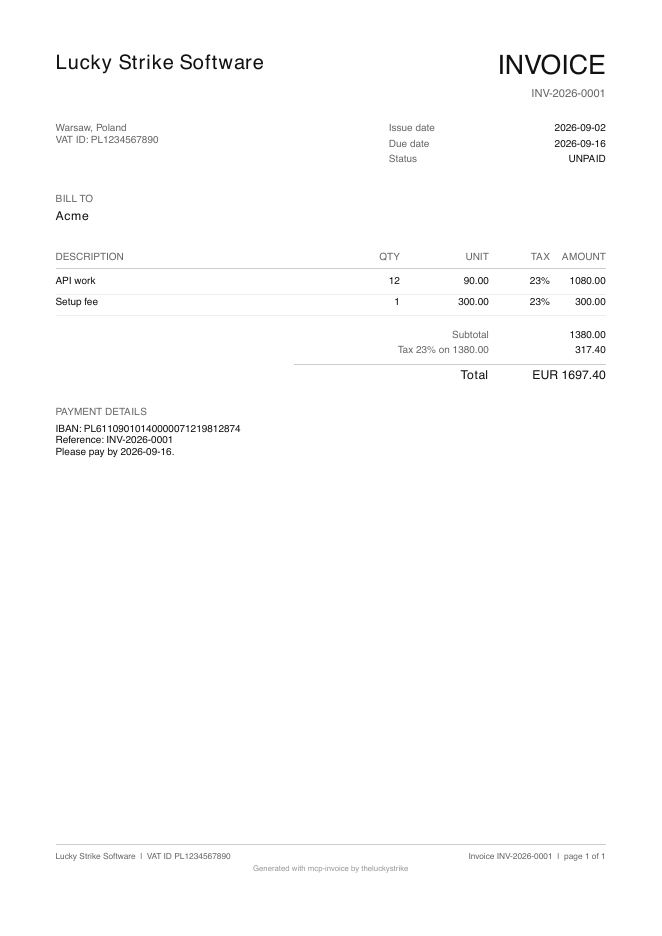

Organic metrics history (4 snapshots, scripts/measure.mjs): 09-02 13:45 dl 8 views 0 stars 0 | 09-02 13:58 dl 25 views 0 stars 0 | 09-02 14:09 dl 25 views 0 stars 0 | 09-02 14:25 dl 29 views 0 stars 0
| Server | Tools | LOC | Build / tests | Distribution | Tool names | Links |
|---|---|---|---|---|---|---|
| expense-tracker @theluckystrike/mcp-expense-tracker 0.2.0 |
11 | 958 | build ok # pass 14 / # fail 0 / 1..21 / # pass 21 / # fail 0 / # duration_ms 818 | npm missing registry published github published smithery blocked glama claimed |
expense_add, expense_list, expense_update, expense_delete, receipt_attach, category_rules, expense_settings, expense_summary, mileage_add, expense_export, expense_to_invoice | buy · readme · sprint |
| invoice @theluckystrike/mcp-invoice 0.2.0 |
10 | 938 | build ok # pass 12 / # fail 0 | npm missing registry published github published smithery blocked glama claimed |
business_set, client_add, client_list, invoice_create, invoice_from_hours, invoice_list, invoice_get, invoice_mark_paid, invoice_pdf, overdue_report | buy · readme · sprint |
| office-suite @theluckystrike/mcp-office-suite 0.2.0 |
0 | 303 | build ok # pass 1 / # fail 0 | npm unknown registry unknown github unknown smithery unknown glama unknown |
buy · readme · sprint | |
| price-tracker @theluckystrike/mcp-price-tracker 0.2.0 |
8 | 1295 | build ok # pass 18 / # fail 0 | npm missing registry published github published smithery blocked glama claimed |
price_check, watch_add, watch_list, watch_remove, watch_refresh, price_history, price_add_manual, alerts_pending | buy · readme · sprint |
| spreadsheet @theluckystrike/mcp-spreadsheet 0.2.0 |
8 | 1134 | build ok # pass 31 / # fail 0 | npm missing registry published github published smithery blocked glama claimed |
sheet_info, sheet_read, sheet_query, sheet_stats, sheet_find, sheet_write, sheet_add_column, sheet_convert | buy · readme · sprint |
| time-tracker @theluckystrike/mcp-time-tracker 0.2.0 |
11 | 791 | build ok # pass 2 / # fail 0 | npm missing registry published github published smithery blocked glama claimed |
timer_start, timer_stop, timer_status, entry_add, entry_list, entry_delete, entry_edit, project_set_rate, report, export_csv, invoice_summary | buy · readme · sprint |
| Unit | Status | Tests | Cost | Failures logged | Insight |
|---|---|---|---|---|---|
| AUDIT | PARTIAL | 10/10, 12/12, 18/18, 31/31, 2/2, 15/15, 13/13, 19/19, 31/31, 3/3 | 27 wall minutes | 0 | | |
| billing | DONE | 6/6, 10/10, 18/18, 10/10, 12/12, 18/18, 31/31 | 0 | ||
| bundles | DONE | 19 wall minutes | 1 | the mcpb v0.2 schema's `user_config` entries require `type`, `title`, `description` (not just `type`); `env` values reference config with `${user_config.<key>}` string interpolation (confirmed by grepping the mcpb CLI's own `dist/shared/config.js`, which builds `user_config.${key}` lookups), not a nested object reference. | |
| CODEX_REVIEW | REVIEW | 0 | |||
| CONTENT | DONE | 0 | |||
| dashboard | DONE | 20 minutes | 1 | because the script re-reads the previous ledger.json before overwriting it, | |
| DEMO | DONE | 33 wall minutes | 1 | `npm run build -w packages/mcp-license -w servers/<name>` is required, not just `-w servers/<name>` -- | |
| DIRECTORIES | PARTIAL | 24 wall minutes | 1 | The smithery.yaml files in this repo are decorative. The zod schema that Smithery CLI 4.11.1 actually | |
| DISTRIBUTION | DONE | 24 wall minutes | 1 | the official registry's npm-ownership check (mcpName field in package.json) is verifiable by reading the registry's own Go source via `gh api` code search -- the vendor's public docs don't spell this out as clearly as the validator source comment does ("NPM is unaffected because it compares an exact metadata field rather than scanning README text"), so trusting only the written guides here would have left the mcpName | |
| EXPENSE_DIST | DONE | 27 wall minutes | 1 | The route-derived `/guides`, `/sitemap.xml` and `/llms.txt` (built from `Object.keys(GUIDES)`) | |
| FORMS | PARTIAL | 34 wall minutes | 0 | ||
| MARKETPLACES | DONE | 29 wall minutes | 1 | Docker's build never uses the server.yaml directory as a Dockerfile root - `-f` is resolved inside whatever context `GetContext()` produced, so `directory` and `dockerfile` are mutually exclusive for a monorepo. Setting only `dockerfile` is what makes a workspace monorepo buildable, and it is also what forces the Dockerfile to be root-context; a per-subfolder Dockerfile can never see a sibling workspace package that | |
| NAMING | DONE | 0 | |||
| NPM_AUTH | BLOCKED | 21 wall minutes | 1 | the blocker is not the token, it is that no browser profile on this machine holds | |
| README_DEPTH | n/a | 0 | |||
| REMOTE | DONE | 0 | |||
| servers/expense-tracker | DONE | 14/14, 21/21 | 34 wall minutes | 1 | Rebilling an expense onto an invoice cannot pass the gross amount as unit_price. The invoice server recomputes tax from |
| servers/invoice | DONE | 12/12 | 19 wall minutes | 1 | The float-stability epsilon in `roundHalfUp` is load-bearing, not decoration. 1.005 * 100 evaluates to 100.49999999999999 in IEEE 754, so a plain `Math.floor(v + 0.5)` rounds a 1.005 unit price down to 100 cents instead of 101. Measured across the money suite this is the only place a naive implementation diverges, and it diverges silently by one cent per affected line, which then compounds through the per-line tax st |
| servers/office-suite | DONE | 1/1 | 24 wall minutes | 1 | the SDK's high-level McpServer.registerTool takes a Zod shape or Zod schema for |
| servers/price-tracker | DONE | 18/18 | 21 wall minutes | 1 | Structured price data is not the common case on the open web. Of the extraction paths, only |
| servers/spreadsheet | DONE | 31/31 | 24 wall minutes | 1 | Guessing the header row cannot be done on the first row alone and cannot be done on types alone. |
| servers/time-tracker | DONE | 2/2 | 17 wall minutes | 1 | Money must be derived from seconds and an integer cents rate in one rounding step, not by |
| Product | Stripe product | Price id | USD |
|---|---|---|---|
| time-tracker | prod_VBaes22x8ep6dy | price_1UBDU5JKCamubEm1wPMZI8Zf | 19 |
| price-tracker | prod_VBaf0G0s9cXwUA | price_1UBDU6JKCamubEm1ufsEKwSS | 19 |
| spreadsheet | prod_VBafhH6MyyTg6X | price_1UBDU7JKCamubEm1LZTfrsMd | 19 |
| invoice | prod_VBaftxRo2s4HVY | price_1UBDU8JKCamubEm1Ybcp5IUs | 19 |
| expense-tracker | prod_VBc2BK0DpkMjY1 | price_1UBEoOJKCamubEm1ryEKWxIg | 19 |
| bundle | prod_VBafU5C9o9d0f3 | price_1UBDU9JKCamubEm1dWgRjtoW | 39 |
| Surface | Status | Note |
|---|---|---|
| github | published | public, topics set, release v0.1.0 |
| billing | published | Stripe LIVE, custom domain, webhook registered |
| npm | blocked | npm token dead (401); run: npm login --auth-type=web |
| registry | published | 5 servers at v0.2.0 under word-rich names; time-tracker, price-tracker, invoice carry remotes[] (hosted streamable HTTP at mcp.zovo.one/mcp); old names deprecated |
| smithery | blocked | CLI 4.11.1 + REST api.smithery.ai are scriptable with a bearer key, but obtaining one needs one browser login: run `npx -y @smithery/cli auth login` and open the printed https://smithery.ai/auth/cli?s=<session> URL. smithery.yaml validated against the CLI schema (name + target, loose) |
| glama | pending | glama.json (maintainers: theluckystrike) committed at repo root and in each servers/<name>; crawler discovery only, no unauthenticated add endpoint (Add Server button needs a Glama account; directory API needs a key from https://glama.ai/settings/api-keys) |
| mcpb | published | 5 .mcpb bundles on release v0.2.0 |
| awesome-mcp-servers | submitted | PR 13473 open: 4 entries (Workplace & Productivity: time-tracker, spreadsheet; Finance & Fintech: invoice; E-Commerce: price-tracker) |
| mcp.so | skipped: paid | only submit control is 'Pay and submit automatically', $39 one-time listing fee; no free tier on the form. Skipped per operator rule (free submissions only) |
| docker-mcp-catalog | submitted | PR adds servers/{time-tracker,price-tracker,spreadsheet,invoice}/server.yaml + tools.json; source.dockerfile=servers/<name>/Dockerfile with repo root as build context; pinned to commit 7998ce2; cmd/validate 11/11 per server; task build not run (no Docker daemon on this machine); awaiting Docker team review; expense-tracker added same PR (server.yaml+tools.json, commit d82c613, validate 11/11) |
| cline-marketplace | submitted | four submission issues: 2397 time-tracker, 2398 price-tracker, 2399 spreadsheet, 2400 invoice; 400x400 logos in assets/, llms-install.md per server; npx path blocked until npm publish, issues point at the source install; issue 2401 expense-tracker added |
| guides | published | 6 long-form guides + index, FAQPage JSON-LD, sitemap 12 URLs, IndexNow pinged (expense-tracking-in-claude added) |
| mcpservers.org | submitted | free web form (Premium $39 upgrade declined); 4 servers submitted, each returned 'Submission Successful! ... reviewed within 12 hours'; category productivity (time-tracker, spreadsheet) and finance (price-tracker, invoice); this is also the intake for the wong2/awesome-mcp-servers list, which refuses PRs |
| mcpmarket.com | submitted | free queue selected ($0, avg 4-6 weeks) over the $29 'Get Listed Now' tier; 4 repo subdirectory URLs submitted with support@zovo.one; invoice confirmed by the site's own dedupe ('This repository is already in our queue'); the other three could not be re-queried, site rate limits at ~4 submissions/hour |
| cursor.directory | blocked | /mcp redirects to the homepage; submit path /plugins/new redirects to /login, GitHub or Google OAuth only. Free but login-gated, stopped per no-signup rule |
| pulsemcp | blocked | page loads fine in a real browser (no Cloudflare block); intake itself is disabled: 'submissions and changes are temporarily paused', no form rendered |
| wong2-awesome-mcp-servers | not applicable | README: 'We do not accept PRs. Please submit your MCP on the website: https://mcpservers.org/submit'. Handled via the mcpservers.org surface |
| appcypher-awesome-mcp-servers | blocked | repo is archived (gh api archived=true); PR creation returns 404. Branch add-theluckystrike-mcp-servers with the 4 entries is pushed to theluckystrike/awesome-mcp-servers-1 in case it is ever unarchived |
| mcp-get.com | closed | 'This registry is an archived snapshot. The site is read-only ... installs, submissions, and analytics are no longer active.' |
| mcpserverfinder.com | blocked | free, but the only Submit control is mailto:info@mcpserverfinder.com; /submit is 404. No mail channel available to the agent |
| mcpindex.net | dead | HTTP 522, empty document in the browser |
| mcp.pizza | dead | 'This deployment is temporarily paused' |
| mcpcentral.io | dead | DNS does not resolve (DNS_PROBE_POSSIBLE, curl exit 6) |
| hosted | published | streamable HTTP for 3 servers; anonymous token or Pro key; 7/7 validation probes |
| Measure | Value | Context |
|---|---|---|
| MCP new-entrant capture ratio | 1.17 | vs Chrome 0.033; 35.5x like-for-like |
| MCP servers for 'price tracker' | 0 | vs 683 Chrome listings |
| MCP servers for 'time tracker' | 0 | vs 897 Chrome listings |
| MCP servers for 'spreadsheet' | 4 | vs 564 Chrome listings |
| MCP servers for 'invoice' | 60 | vs 414 Chrome listings |
| Servers first published Aug 2026 | 9,355 | 36% of all-time supply in one month |
| Sampled servers at zero use | 66.3% | of 4,811; distribution is the whole game |
| @modelcontextprotocol/sdk major bumps 12mo | 0 | 1.30.0, 29 releases; fastmcp had 2 |
| Stripe Payment Links conversion (estate) | 0 of 74 | backend Checkout Sessions 21.3% |
Section 0 allocates 20% of build capacity to MCP servers on the TypeScript SDK; MCP is an option on 2027 with zero native billing, so billing had to be built. Source: platform-analysis-2026
| Gate | Command / file | When |
|---|---|---|
| Build clean (tsc strict) | npm run build | per server |
| Protocol smoke over stdio, free + pro | npm test | per server |
| License package | npm test -w packages/mcp-license | 6 cases |
| Fresh-machine npx start < 5 s | docs/AUDIT.md section 1 | after every publish |
| Abuse probes (bad input, 1 MB strings, traversal, 0-byte files) | docs/AUDIT.md section 2 | before publish |
| Concurrency: two writers, valid JSON | docs/AUDIT.md section 3 | before publish |
| Checkout 303 to Stripe + /verify round trip | curl mcp.zovo.one | after every worker deploy |
| Independent model review (Codex) | docs/CODEX_REVIEW.md | per release |
npm login --auth-type=web (about one minute, human step), then scripts/publish-all.sh --go.What it does. Starts and stops timers, records manual entries, sets hourly rates per project, and turns the log into reports grouped by project, day, task or tag, CSV exports and invoice-ready line items. Money is computed from seconds and integer cents in one rounding step so totals always add up.
Who it is for. Freelancers, consultants and developers who already work inside Claude Code, Cursor or Claude Desktop and bill by the hour.
Example. "Start a timer for Acme, task: API refactor" ... "Stop it and show me this week's hours per project with amounts."
| Tool | What it does |
|---|---|
| timer_start | Start tracking time on a project. Only one timer runs at a time: starting a new one stops and logs the previous one. |
| timer_stop | Stop the running timer and log it as a time entry. Returns the duration and the entry id. |
| timer_status | Show the running timer, how long it has been running, and today's total so far. |
| entry_add | Log time you already worked. Give start plus either end or minutes. |
| entry_list | List logged time entries as a compact table. Free tier shows the last 7 days. |
| entry_delete | Delete one time entry by id. |
| entry_edit | Change fields of an existing entry. Only the fields you pass are changed. |
| project_set_rate | Set the hourly rate used to turn tracked hours into money for a project. |
| report | Total tracked hours and money for a period, grouped by project, day, task or tag. Free tier covers the last 7 days. |
| export_csv | Write time entries to a CSV file you can hand to a bookkeeper or import into a spreadsheet. Free tier exports the last 7 days. |
| invoice_summary | Turn tracked time into invoice line items for one project: hours, rate, amount per task, plus the total. |
README · build sprint · source
What it does. Fetches a product page and extracts the price from JSON-LD, microdata, Open Graph tags, common price markup or a currency-aware text fallback, normalising 1.299,00 EUR and 1,299.00 USD alike. Stores watches with a price history, refreshes them, computes min, max and change, and flags target hits and drops of 5% or more. Manual entry covers pages that block bots.
Who it is for. Anyone who asks their assistant what something costs now, whether it dropped, or to keep an eye on it.
Example. "What does this laptop cost right now?" ... "Watch it and tell me when it drops under 900."
| Tool | What it does |
|---|---|
| price_check | Fetch a product page right now and report its price, currency and title, plus the change against the last price stored for that URL. Does not create a watch. |
| watch_add | Start tracking a product page. Fetches it once and stores the first observation. Optionally set a target price to be alerted about. |
| watch_list | Show every tracked item with its current price, target and last check time. |
| watch_remove | Stop tracking an item, by watch id or by URL. Its history is deleted. |
| watch_refresh | Re-fetch one watch or every watch, append the new observations and show current, previous, min, max, change % and target hits. |
| price_history | List the stored observations for one watch, newest last. Free shows the last 10. |
| price_add_manual | Store a price you read yourself, for shops that block automated requests. Creates the watch if it does not exist yet. |
| alerts_pending | Show watches whose latest price is at or below the target, or which dropped ${DROP_ALERT_PCT}% or more against the previous observation. |
README · build sprint · source
What it does. Opens xlsx, xlsm, xlsb, ods, csv and tsv files, guesses the header row on messy exports, sniffs delimiters, and answers questions with a safe expression language (no eval): filters, sorts, per-column stats, find, computed columns such as [Qty] * [Unit Price], and conversion between formats. It never overwrites the source unless told to.
Who it is for. Anyone who says: open this file, tell me what is in it, filter it, add a column, save it.
Example. "Open orders.xlsx and show open orders over 5 units sorted by amount" ... "Add a Total column and save as CSV."
| Tool | What it does |
|---|---|
| sheet_info | Open an xlsx or csv file and describe it: sheet names, size, guessed header row, per-column type, sample values and empty counts. Start here before reading or querying. |
| sheet_read | Read rows from a sheet as a text table, JSON records or CSV. Use limit/offset to page through big files, or range for an A1 block like B2:F40. |
| sheet_query | Filter, pick columns and sort rows without writing any code. where uses a small safe expression language: comparisons = != > >= < <= plus contains / startswith / endswith, combined with AND, OR, NOT and parentheses. |
| sheet_stats | Per-column count, empty count, distinct values, min, max, sum, mean and median. Numbers are parsed from currency and percent text too. |
| sheet_find | Search every cell for text (case insensitive) and return cell addresses with a preview of the row it is on. |
| sheet_write | Write rows to a spreadsheet. rows may be objects (keys become headers) or arrays (first array is the header row). |
| sheet_add_column | Convert a sheet to csv, xlsx or json. Writes a new file next to the source unless out_path is given. |
README · build sprint · source
What it does. Stores the issuer profile and clients, allocates invoice numbers that never repeat (INV-YYYY-NNNN), computes per-line rounding, multiple VAT rates and discounts in integer minor units, renders an A4 PDF with pdfkit (multi-page tables, totals, payment details), tracks paid status and reports overdue invoices. Pairs with the time tracker: hours become an invoice in the same chat.
Who it is for. Freelancers and small businesses that want to say: make an invoice for Acme, 12 hours at 90 EUR, due in 14 days.
Example. "Invoice Acme for 12 h at 90 EUR with 23% VAT, due in 14 days, and give me the PDF."
| Tool | What it does |
|---|---|
| business_set | Store the issuer profile printed at the top of every invoice: your name, address, VAT id, bank details and defaults (currency, tax rate, payment terms, invoice number prefix). Call this once before creating invoices. |
| client_add | Store a client so invoices can refer to them by name. Re-adding the same name updates the stored details. |
| client_list | List every stored client with their id, address, email and VAT id. |
| invoice_create | Create an invoice for a client from a list of items. Allocates the next invoice number (never reused), computes subtotal, discount, tax lines per rate and the total. Amounts are held as integer minor units; every line is |
| invoice_from_hours | Shortcut for the common case: bill one client for N hours at an hourly rate. Creates a single-line invoice. |
| invoice_list | List invoices, optionally filtered by status (unpaid, paid, partial), client, and an issue-date range. |
| invoice_get | Return the full stored record for one invoice number, including every line and tax breakdown. |
| invoice_mark_paid | Record a payment. Without an amount the invoice is marked fully paid; a smaller amount marks it partial and reports the remaining balance. |
| invoice_pdf | Render an invoice as an A4 PDF you can send: issuer block, client block, dates, item table with wrapped descriptions, subtotal, discount, tax lines per rate, total, payment details and notes. Returns the file path. |
| overdue_report | List every unpaid or partly paid invoice past its due date with days overdue, plus outstanding totals per currency. Pro. |
README · build sprint · source
What it does. Logs expenses with per-expense currency, VAT split and receipt attachment (path + sha256), auto-categorises merchants by rules, records mileage with country rate tables, summarises by category, project, month or merchant per currency, exports CSV or xlsx, and emits invoice-ready line items (net + tax rate, so nothing is taxed twice) for rebilling a project with optional markup.
Who it is for. Freelancers and small businesses who already track time and invoice from chat and want the receipts side closed in the same place.
Example. "I paid 61.50 EUR at Media Markt for a USB hub, Acme project, billable" ... "Give me the invoice lines to rebill Acme this month with 10% markup."
| Tool | What it does |
|---|
README · build sprint · source
What it does. A stdio proxy that starts the time tracker, price tracker, spreadsheet, invoice and expense tracker as child processes and exposes all their tools, resources and prompts under one server with a single license_status and license_activate. Measured reason: the most-used server in the category is an aggregator; one install beats five.
Who it is for. Anyone who wants the whole freelancer workflow in one config line.
Example. "Start a timer for Acme" ... "Invoice Acme for this week's hours plus the USB hub receipt."
| Tool | What it does |
|---|
README · build sprint · source
Every run spawns each server over stdio in a fresh sandbox, exercises real tools in free and Pro mode, then probes the live billing worker. Run: node scripts/validate.mjs. Database: data/validation.json (13 runs kept).
| Server | Summary |
|---|---|
| expense-tracker | # pass 14 / # fail 0 |
| invoice | # pass 12 / # fail 0 |
| office-suite | # pass 1 / # fail 0 |
| price-tracker | # pass 18 / # fail 0 |
| spreadsheet | # pass 31 / # fail 0 |
| time-tracker | # pass 2 / # fail 0 |
| At | Pass | Total | Per unit |
|---|---|---|---|
| 2026-09-02T14:24:52.235Z | 114 | 114 | expense-tracker 22/22 · time-tracker 18/18 · price-tracker 18/18 · spreadsheet 18/18 · invoice 20/20 · remote 7/7 · billing 11/11 |
| 2026-09-02T14:09:28.279Z | 115 | 115 | expense-tracker 23/23 · time-tracker 18/18 · price-tracker 18/18 · spreadsheet 18/18 · invoice 20/20 · remote 7/7 · billing 11/11 |
| 2026-09-02T14:08:55.217Z | 115 | 116 | expense-tracker 23/24 · time-tracker 18/18 · price-tracker 18/18 · spreadsheet 18/18 · invoice 20/20 · remote 7/7 · billing 11/11 |
| 2026-09-02T14:08:19.248Z | 111 | 114 | expense-tracker 19/22 · time-tracker 18/18 · price-tracker 18/18 · spreadsheet 18/18 · invoice 20/20 · remote 7/7 · billing 11/11 |
| 2026-09-02T13:51:36.170Z | 84 | 84 | time-tracker 18/18 · price-tracker 18/18 · spreadsheet 18/18 · invoice 20/20 · billing 10/10 |
| 2026-09-02T13:37:30.391Z | 84 | 84 | time-tracker 18/18 · price-tracker 18/18 · spreadsheet 18/18 · invoice 20/20 · billing 10/10 |
| 2026-09-02T13:36:42.320Z | 81 | 82 | time-tracker 18/18 · price-tracker 18/18 · spreadsheet 15/16 · invoice 20/20 · billing 10/10 |
| 2026-09-02T13:36:32.624Z | 81 | 82 | time-tracker 18/18 · price-tracker 18/18 · spreadsheet 15/16 · invoice 20/20 · billing 10/10 |
| 2026-09-02T13:20:20.214Z | 82 | 82 | time-tracker 18/18 · price-tracker 18/18 · spreadsheet 16/16 · invoice 20/20 · billing 10/10 |
| 2026-09-02T13:03:03.424Z | 82 | 82 | time-tracker 18/18 · price-tracker 18/18 · spreadsheet 16/16 · invoice 20/20 · billing 10/10 |
| 2026-09-02T12:59:15.345Z | 82 | 82 | time-tracker 18/18 · price-tracker 18/18 · spreadsheet 16/16 · invoice 20/20 · billing 10/10 |
| 2026-09-02T12:57:29.994Z | 82 | 82 | time-tracker 18/18 · price-tracker 18/18 · spreadsheet 16/16 · invoice 20/20 · billing 10/10 |
| 2026-09-02T12:57:11.717Z | 79 | 80 | time-tracker 18/18 · price-tracker 15/16 · spreadsheet 16/16 · invoice 20/20 · billing 10/10 |
Impact = reach signal x fit x terminal feasibility. Reach signals are measured where a number exists (registry crawl 26,098 servers; VS Code gallery consumes the official registry; awesome-mcp-servers 70k+ stars; estate sites ~1,632 clicks/28d). Rows with no number are marked estimate.
| # | Action | Channel | Reach signal | Terminal | Human step | Status | How (agent runs this) | Impact |
|---|---|---|---|---|---|---|---|---|
| 1 | Official MCP registry listing (done) | registry.modelcontextprotocol.io, consumed by VS Code, Claude, Cursor pickers | 26,098 servers indexed; new entrants capture 1.17x their share (measured) | yes | none | done | mcp-publisher login github -token $(gh auth token); mcp-publisher publish server.mcpb.json | 95 |
| 2 | npm publish + registry re-publish with npm package | npx install path; every directory links to it | gates Smithery/Glama install counts and the npx snippet in every README | yes after one login or trusted publishing | npm login once, or configure Trusted Publishing once | blocked | scripts/publish-all.sh --go; or GitHub Actions publish.yml with --provenance | 92 |
| 17 | Hosted streamable-HTTP endpoints (in progress) | mcp.zovo.one/mcp/<server>, registry remotes[], Smithery use counts | MEASURED: 15/15 top-used servers in our categories are hosted; stdio-only servers cannot accrue use | yes | none | done: 3 endpoints live, remotes[] published in registry v0.2.0 | remote/ worker, KV per tenant, bearer = license key or anonymous token | 90 |
| 3 | Docker MCP catalog PR | docker/mcp-registry on GitHub (Docker Desktop MCP Toolkit shows the catalog to every Docker Desktop user) | estimate: largest non-IDE MCP surface; PR-based, no login beyond gh | yes | none | PR open docker/mcp-registry#4892 | SUBMITTED 2026-09-02: fork theluckystrike/mcp-registry, branch add-theluckystrike-mcp-servers, servers/<name>/server.yaml + tools.json for all four, pinned to commit 7998ce2; go run ./cmd/validate passes 11/11 per server; PR https://github.com/docker/mcp-registry/pull/4892. Free, no listing fee. | 88 |
| 4 | Cline MCP marketplace submission | cline/mcp-marketplace GitHub issue template | estimate: Cline has 1M+ VS Code installs; marketplace is an issue-form, fully scriptable | yes | none | issues 2397-2400 open | SUBMITTED 2026-09-02: four issues on cline/mcp-marketplace using their MCP Server Submission form fields (#2397 time-tracker, #2398 price-tracker, #2399 spreadsheet, #2400 invoice); 400x400 PNG logos in assets/, llms-install.md per server. Free, no listing fee. Label server-submission could not be set (no repo write access). | 85 |
| 5 | awesome-mcp-servers PR (in progress) | punkpeye/awesome-mcp-servers | the most-starred MCP list; PR-based | yes | maintainer merge | PR open #13473 | fork, add 4 lines, gh pr create | 80 |
| 6 | Own-estate backlinks: Tools for Claude page + footer links | zovo.one, belikenative.com, calculator sites already ranking | ~1,632 clicks/28d across the estate (measured); zero cost | yes | none | ready | add /tools-for-claude page on zovo.one via existing deploy; footer link on 6 sites; ping IndexNow | 72 |
| 8 | Claude Desktop extensions directory submission | Anthropic desktop extension directory | one-click install inside Claude Desktop; .mcpb bundles are built and released | partial | submission form | ready | bundles/*.mcpb + form at the directory submission page | 70 |
| 16 | Measure, then double down | data/sales.json, Stripe, npm downloads, registry search | only rows with a measured number keep budget | yes | none | continuous | scripts/validate.mjs + weekly: npm downloads API, Stripe sessions vs paid, GitHub traffic API (gh api repos/.../traffic/views) | 70 |
| 9 | Glama claim + Smithery connect | glama.ai, smithery.ai | Smithery shows install counts and ranks by them; Glama scores repos automatically (glama.json added) | partial | one GitHub OAuth click each | in progress | repo already has smithery.yaml + glama.json; user clicks Connect | 65 |
| 7 | Search engines: sitemap submit + IndexNow | Google Search Console (API access exists), Bing/Yandex IndexNow | mcp.zovo.one has product pages, schema.org offers, llms.txt (done) | yes | add mcp.zovo.one property once if not covered by the zovo.one domain property | partial: IndexNow pinged 5 URLs (202); GSC property pending | gsc sitemaps.submit; curl api.indexnow.org with a key file on the worker | 60 |
| 18 | Word-rich registry names (done) | official registry name-substring search | MEASURED: matched query tokens 7/34 -> 18/34; rank unchanged (alphabetical prefix) | yes | none | done | republish under new names, deprecate old | 60 |
| 10 | dev.to + Hashnode articles via API | dev.to REST API (api key), Hashnode GraphQL | estimate: long-tail search for 'time tracker mcp', 'invoice mcp claude'; articles rank for MCP how-to queries | yes | one API key per platform | partial: 5 guides live on mcp.zovo.one/guides (own domain); dev.to/Hashnode need API keys | 4 how-to posts generated from READMEs + the research numbers; POST /api/articles | 55 |
| 14 | Show HN / Reddit r/ClaudeAI, r/mcp | news.ycombinator.com, reddit | estimate: highest single-day spike available; needs a human account action and one real demo | no | post from own account | draft ready | agent drafts title + body (docs/LAUNCH_POSTS.md); user posts | 50 |
| 11 | Second awesome lists + directory PRs | wong2/awesome-mcp-servers, appcypher/awesome-mcp-servers, mcpservers.org, cursor.directory | smaller lists; PR or form | mostly | forms only | ready | gh fork + PR for the GitHub lists; forms recorded in docs/DISTRIBUTION.md | 45 |
| 13 | LinkedIn posts from the existing pipeline | LinkedIn poster | MEASURED: pipeline never asks for the sale; buyer share 29-47%; use for the invoice + time tracker servers only (freelancer audience) | yes | none | low priority | 2 posts, invoice and time tracker, link to /s/<id> | 30 |
| 12 | X posts from the existing CDP pipeline | @_alphashark_ via /private/tmp/xpipe31 | MEASURED: X replies earn nothing (86% of 397 earned zero); original posts with the demo GIF are the only X format worth one test | yes | none | low priority | one post per server with a 10 s terminal recording; judge only on clicks to mcp.zovo.one | 25 |
| 15 | Product Hunt launch | producthunt.com | estimate; OAuth needed; one-day spike, weak for dev tools | no | account + launch | later | after 10 paying customers | 20 |
claude CLI 2.1.258 as MCP client, --strict-mcp-config, model sonnet, fresh XDG_DATA_HOME=/private/tmp/uv/data (free tier) Run at 2026-09-02T20:40:00Z. Full report: docs/USER_VALUE.md.
| Server | User said | R1 | R2 | Calls | Sec | Note |
|---|---|---|---|---|---|---|
| time-tracker | Start tracking time for the Acme website project. | 3 | 3 | 1 | 7.1 | |
| time-tracker | Stop the timer and tell me how long I worked. | 3 | 3 | 1 | 10.8 | |
| time-tracker | Log 2.5 hours yesterday for Acme, design review, at 90 euros an hour. | 2 | 3 | 1 | 9.2 | entry_add {project:"Acme", rate:"90 euros an hour"} -> resolved to the existing "Acme website" project, answer 'EUR 90/h = EUR 225.00'. |
| time-tracker | How much do I bill Acme this week? Give me invoice lines. | 2 | 2 | 7 | 35.6 | EUR 90.00/h, EUR 225.00, 2.50 h, single project. Correct. But invoice_summary (the tool the prompt names) is Pro-gated, so the model rebuilt the lines from entry_list + report over 7 calls and 35.6 s. |
| price-tracker | What does this cost right now: https://books.toscrape.com/catalogue/a-light-in-the-attic_1000/index.html | 1 | 1 | 1 | 13.7 | Client answered with built-in WebFetch again. The rewritten price_check description was never read: the model ran ToolSearch "select:WebFetch" directly. |
| price-tracker | same, WebFetch disallowed (control) | 3 | 3 | 1 | 9.6 | price_check -> GBP 51.77, plus 'Confidence: low (regex-fallback)', which the model relayed. |
| price-tracker | Watch that page and alert me if it goes under 40. | 2 | 3 | 1 | 12.6 | watch_add succeeded and the model told the user, unprompted, that nothing polls in the background and that 'refresh my watches' is the pattern. No external scheduler was invoked. |
| price-tracker | Show me everything I'm watching and whether anything dropped. | 1 | 3 | 3 | 14.3 | watch_refresh {all:true} then watch_list then alerts_pending, all free. Answer: GBP 51.77, +0.00%, target GBP 40 not hit, confidence low. |
| spreadsheet | Open sales.xlsx and tell me what's in it. | 3 | 3 | 3 | 14.2 | |
| spreadsheet | Which rep sold the most units in the North region? Top 5 with totals. | 2 | 1 | 3 | 23 | One sheet_query with group_by+aggregate did the work in-server (no python), but the model added an unrequested [Status]="Closed" filter and reported Turing 391, Linus 334, Hopper 311, Lovelace 173, Liskov 156. Ground truth for the question asked is Turing 650, Hopper 567, Linus 551, Lovelace 486, Liskov 290. Top rep right, totals and 2nd/3rd order wrong. The same query without the Closed filter returns the ground truth exactly in one call (verified by direct probe). |
| spreadsheet | Add a Revenue column and save it as a CSV next to the original. | 1 | 3 | 1 | 17.3 | sheet_add_column wrote /private/tmp/uv2/sales.csv: 401 lines (header + 400 rows), Revenue matches ground truth on every row, total 10,142,542.04. String prices ('1,516.16' x 35 = 53065.6) handled. Source xlsx untouched. |
| invoice | Set up my business: ... EUR, 23% VAT, 14 day terms. | 3 | 3 | 1 | 16.3 | |
| invoice | Invoice Acme, 12 h API work at 90 EUR + 300 EUR setup, PDF. | 3 | 3 | 2 | 18.1 | INV-2026-0001, EUR 1080.00 + EUR 300.00 = EUR 1380.00, 23% tax EUR 317.40, total EUR 1697.40. Exact. The model also relayed the new bare-client warning and offered client_add. |
| invoice | Which invoices are unpaid and overdue? | 2 | 3 | 1 | 11.8 | overdue_report answered directly on free, one call, no fallback. |
Report: docs/USER_VALUE_R2.md. Real-retailer hit rate round 2: 42%. PDF: PASS.
| Server | User said | Score | Calls | Sec | Note |
|---|---|---|---|---|---|
| time-tracker | Start tracking time for the Acme website project. | 3/3 | 1 | 8.6 | timer_start, project "Acme website". Correct, one call. |
| time-tracker | Stop the timer and tell me how long I worked. | 3/3 | 1 | 9.4 | timer_stop returned 8 s / 0.00 h, correct for the real elapsed time. |
| time-tracker | Log 2.5 hours yesterday for Acme, design review, at 90 euros an hour. | 2/3 | 1 | 10 | 150 min logged on 2026-09-01 at rate 90. EUR silently dropped: entry_add has no currency parameter. |
| time-tracker | How much do I bill Acme this week? Give me invoice lines. | 2/3 | 3 | 29 | 2.50 h / 225.00 correct, but rendered as $225.00 USD not EUR, and hours were split across two projects ("Acme website" vs "Acme"). |
| price-tracker | What does this cost right now: https://books.toscrape.com/catalogue/a-light-in-the-attic_1000/index.html | 1/3 | 1 | 11.9 | Client answered with built-in WebFetch. price_check was never called; the server delivered zero value in the natural run. |
| price-tracker | same, WebFetch disallowed | 3/3 | 1 | 14 | Control run. price_check returned GBP 51.77, correct. Establishes the ceiling. |
| price-tracker | Watch that page and alert me if it goes under 40. | 2/3 | 2 | watch_add succeeded (id 3fade106, target 40). No alerting mechanism exists, so the agent tried to build a cron job with the external schedule skill. Original run had no URL referent across sessions (harness artifact); rerun as pt2b with the URL inline. | |
| price-tracker | Show me everything I'm watching and whether anything dropped. | 1/3 | 2 | 11.1 | watch_list works; the "whether anything dropped" half is unanswerable on free because alerts_pending is fully Pro-gated. |
| spreadsheet | Open /private/tmp/uv/sales.xlsx and tell me what's in it. | 3/3 | 3 | 16.5 | 3 sheets, 400 rows, headerRow=2 detected past the title+blank rows, correct column types and value ranges. |
| spreadsheet | Which rep sold the most units in the North region? Show the top 5 with totals. | 2/3 | 5 | 71.4 | Answer matches ground truth (Turing 650, Hopper 567, Linus 551, Lovelace 486, Liskov 290) but only via a Bash/python fallback: sheet_query filters and selects, it cannot group or sum. |
| spreadsheet | Add a Revenue column (units times unit price) and save it as a CSV next to the original. | 1/3 | 2 | sheet_add_column computed Revenue correctly including string prices ("1,516.16" x 35 = 53065.6) but the free 200-row cap wrote 200 of 400 rows to a file that looks complete. Agent abandoned the MCP server and produced the CSV with python. | |
| invoice | Set up my business: Lucky Strike Software, Warsaw, VAT PL1234567890, IBAN PL...874, EUR, 23% VAT, 14 day terms. | 3/3 | 1 | 13.9 | business_set, every field parsed from free text in one call. |
| invoice | Invoice Acme for 12 hours of API work at 90 EUR and a 300 EUR setup fee, due in 14 days, and give me the PDF. | 3/3 | 2 | 15.4 | INV-2026-0001: subtotal EUR 1380.00, 23% tax EUR 317.40, total EUR 1697.40. Matches the independent check exactly. PDF written. |
| invoice | Which invoices are unpaid and overdue? | 2/3 | 2 | 11.1 | overdue_report returned the Pro upgrade text; the correct answer came from the invoice_list fallback. |
| URL | HTTP | Price | Currency | Source | Correct |
|---|---|---|---|---|---|
| https://books.toscrape.com/catalogue/a-light-in-the-attic_1000/index.h | 200 | 51.77 | GBP | regex-fallback | ok |
| https://www.apple.com/shop/buy-mac/macbook-air | 200 | 1299 | USD | json-ld | ok |
| https://www2.hm.com/en_us/productpage.1227154001.html | 403 | fail | |||
| https://www.ikea.com/us/en/p/billy-bookcase-white-00263850/ | 200 | 39 | USD | json-ld | fail |
| https://www.bestbuy.com/site/apple-airpods-pro-2/6447382.p | fail | ||||
| https://www.walmart.com/ip/Great-Value-Whole-Vitamin-D-Milk-Gallon-128 | 200 | 3.52 | USD | microdata | ok |
| https://allegro.pl/oferta/lego-classic-11030-mnostwo-bialych-klockow-1 | 403 | fail | |||
| https://mediamarkt.pl/agd-male/ekspres-cisnieniowy-delonghi-ecam-220-2 | 403 | fail | |||
| https://www.homedepot.com/p/Husky-46-in-9-Drawer-Tool-Chest/319127775 | 403 | fail | |||
| https://www.newegg.com/p/N82E16819113877 | 200 | 469 | USD | class:product-price | ok |
| https://www.etsy.com/ | 403 | fail | |||
| https://www.gap.com/browse/product.do?pid=440760012 | 200 | 49.95 | USD | class:price | ok |
A4 single page, clean grid. Header (business name left, INVOICE + number right), issue/due/status block, BILL TO, 4-column line table with per-line tax, right-aligned Subtotal/Tax/Total with Total in EUR, payment details with IBAN and reference, free-tier footer. Nothing cut off, nothing overlapping, totals readable at 80 dpi. Two cosmetic gaps: line amounts carry no currency symbol (only the Total does), and BILL TO shows only the client name because invoice_create auto-created Acme with no address.

| Surface | Status | Listed | Findable | Reach | Score | Evidence | What raises it |
|---|---|---|---|---|---|---|---|
| Official MCP registry (API) | live | 1 | 0.239 | 1 | 24 | measured: matched 18 of 34 natural queries after the 2026-09-02 rename (7 of 34 before); mean p(seen)=0.239 vs 0.092 before. The old 0.3 findable was an estimate; this one is measured. | rank cannot be improved (alphabetical on the full name, and the io.github.theluckystrike prefix is fixed). Remaining levers: publish under additional near-empty tokens only if honest, and drive installs on surfaces that rank by installs. |
| VS Code MCP gallery (reads the registry) | live | 1 | 0.239 | 0.9 | 22 | same search index as the registry; findable copied from the measured registry number | same as registry |
| Docker MCP catalog | PR pending | 0.5 | 0.5 | 0.6 | 15 | curated catalog shown to Docker Desktop users; PR based | maintainer merge |
| Cursor and Claude Code pickers (registry-backed) | live | 1 | 0.2 | 0.7 | 14 | same index, but picker users type multi-word natural language, which returns 0 registry-wide; discounted 17% from the measured registry findable | nothing further from naming: a space in the query returns 0 results for every server in the registry |
| Cline marketplace | issue pending | 0.5 | 0.5 | 0.5 | 12 | issue-form intake; listing includes logo and llms-install.md | maintainer approval |
| awesome-mcp-servers (punkpeye) | PR open #13473 | 0.5 | 0.3 | 0.7 | 10 | 2,237 entries, alphabetical inside categories, ours start with 'theluckystrike' so near the bottom | merge; entries are text-searchable on the page, so wording matters |
| Claude Desktop extensions directory | not submitted | 0.2 | 0.5 | 0.9 | 9 | curated, small; .mcpb bundles ready on release v0.1.0 | human submits the form once |
| Google: mcp.zovo.one product pages | live, indexed via IndexNow | 1 | 0.1 | 0.8 | 8 | new subdomain, 5 pages, 0 backlinks; queries like 'invoice mcp server' have low volume | estate backlinks from 6 ranking sites; one how-to article per server |
| GitHub search and topics | live | 1 | 0.08 | 0.5 | 4 | 0 stars among 26,879 topic repos; search 'mcp time tracker' ranks by stars and recency | stars come from real users; recency helps for 30 days |
| Glama | crawler intake | 0.5 | 0.15 | 0.4 | 3 | auto-indexes public repos with glama.json; scores by repo quality; thousands listed | wait for crawl; README quality already high |
| Smithery | blocked: one browser login | 0.2 | 0.15 | 0.6 | 2 | ranks by install count; new servers start at 0 | login once, then REST publish of the 4 .mcpb bundles |
| llms.txt and agent crawlers | live | 1 | 0.05 | 0.1 | 0 | no known crawler ranks these yet | none |
| mcp.so | skipped: paid ($39) | 0 | 0 | 0.3 | 0 | paid submission only | none, per rule |
| Server | Registry slot (measured) | Competitors in slot | Organic rating | Why |
|---|---|---|---|---|
| time-tracker | 'time' 216 of 296; 'timesheet' 1 of 2; 'hours' 2 of 2; 'billable' 1 of 1; 'time-tracker' 5 of 5; 'timer', 'tracking', 'time tracker' no match | undefined | 51 | matched 5 of 8 natural queries, up from 2 of 8; it now owns the three near-empty tokens (billable 0 prior competitors, timesheet 1, hours 1) outright, which is where the whole gain comes from |
| price-tracker | 'price' 100 of 114; 'drop' 159 of 164; 'alert' 35 of 43; 'watch' 128 of 138; 'price-tracker' 7 of 8; 'prices', 'deal', 'product', 'shop' no match | undefined | 15 | matched 5 of 10 natural queries, up from 2 of 10, but every token it gained is crowded: only 'alert' (rank 35 of 43) is close enough to a first page to matter |
| spreadsheet | 'spreadsheet' 13 of 15; 'excel' 160 of 163; 'xlsx' 19 of 19; 'csv' 17 of 17; 'sheet' 107 of 113; 'sheets', 'table', 'data' no match | undefined | 25 | matched 5 of 8 natural queries, up from 2 of 8; xlsx (19 total) and csv (17 total) are short enough lists that last place is still on the first screen; 'excel' at 160 of 163 is worthless |
| invoice | 'invoice' 84 of 93; 'billing' 28 of 28; 'pdf' 258 of 281; 'invoices', 'invoicing', 'receipt', 'quote', 'freelance' no match | undefined | 6 | the weakest of the four: 'invoice' and 'pdf' are crowded and alphabetical order pins us near the end. 'invoicing' (68 results) is unreachable because the name contains 'invoice', not 'invoicing'; 'invoices' has 0 competitors and is likewise unmatched |
| Finding | Detail | Source |
|---|---|---|
| Registry search is name-substring only | searching 'billable', 'VAT', 'xlsx' (words in our descriptions) returned 0 of ours before the rename; 'theluckystrike' returns all of ours | measured 2026-09-02 via /v0/servers?search= |
| Search is case-insensitive | TIMESHEET, Timesheet and timesheet each return the same 1 result (2 after the rename) | measured 2026-09-02 |
| Search matches across the slash | search='theluckystrike/time' returns io.github.theluckystrike/time-tracker; search='luckystrike/invoice' returns our invoice server | measured 2026-09-02 |
| Natural language queries return nothing for anyone | 'time tracker' 0, 'time tracking' 0, 'price tracker' 0: any query containing a space returns 0 results registry-wide | measured |
| Sort is alphabetical by the FULL name, so the slug cannot buy rank | io.github.theluckystrike/* sorts after ai.*, app.*, cn.*, co.*, com.* and most io.github.*; renaming changed WHICH queries we appear in, not our position inside them ('time' rank 214 before, 216 after) | measured before and after the rename |
| Renaming bought token coverage, not rank | matched natural queries went from 7 of 34 to 18 of 34; measured findable 0.092 -> 0.239 | measured 2026-09-02, data/registry_rank.json before/after |
| Near-empty tokens exist and are worth more than crowded ones | billable 0 competitors, timesheet 1, hours 1, invoices 0, freelance 6, receipt 15, csv 16, xlsx 18: our new names now rank 1, 1, 2, 17, 19 on billable, timesheet, hours, csv, xlsx | measured 2026-09-02 |
| Crowded tokens stay useless even when matched | pdf 281 results (we rank 258), excel 163 (we rank 160), watch 138 (128), drop 164 (159), data 1200 (no match): being on page 26 is the same as not being listed | measured 2026-09-02 |
| mcp-publisher has a status subcommand and it needs a piped confirmation | 'mcp-publisher status --status deprecated --all-versions <name>' prompts 'Continue? [y/N]' and dies with 'failed to read response: EOF' under a non-tty; 'yes y | mcp-publisher status ...' succeeded for all 4 | measured 2026-09-02 |
| Deprecation does NOT remove an entry from search results | after deprecating all 8 old versions, search=theluckystrike still returns 12 rows (4 old-name servers x 2 versions + 4 new); the status flag is metadata only | measured 2026-09-02 after the status calls |
| Every published version is a separate search row | 0.1.0 and 0.1.1 of each server both appear, so each server occupied 2 of the results in every list it matched | measured |
| Registry search index lags a publish by 1-3 minutes | the first re-probe after publishing missed our new name on 'csv' (16 results) and 'pdf' (280); the second probe found it at rank 17 of 17 and 258 of 281 | measured 2026-09-02 |
| The empty slots are closing | research on 2026-09-01 measured 0 servers for price tracker and time tracker; today io.github.CSOAI-ORG/time-tracker-ai-mcp and price-tracker-ai-mcp exist; 9,355 servers were added in August | measured |
| Registry size | 26,098 servers at crawl; 66.3% of sampled servers have zero use | research crawl |
| Awesome list size | 2,237 entries; our PR adds 4 lines placed alphabetically inside categories | measured in PR |
| GitHub topic mcp-server | 26,879 repos sorted by stars; a 0-star repo is on the last pages | gh api, research |
Organic score = 100 x listed x findable x reach. listed: 1 live, 0.5 PR or submission pending, 0.2 blocked on a human step, 0 skipped. findable for registry-backed surfaces is now MEASURED, not estimated: p(seen | query) = 0 if we do not appear in the result list, else min(1, 10/rank); findable = mean of p over the 34 natural queries in servers[].query_set. Same formula applied before and after the 2026-09-02 rename, so the two are comparable. reach: relative audience weight of the surface, 0 to 1, estimate. Per-server organic = 100 x mean(p) over that server's own query set.
node scripts/validate.mjs && node scripts/update-dashboard.mjs --note "..." && node scripts/render-main.mjs. Data: data/ledger.json, data/facts.json, data/distribution.json. Built by theluckystrike. https://github.com/theluckystrike{kind=link}